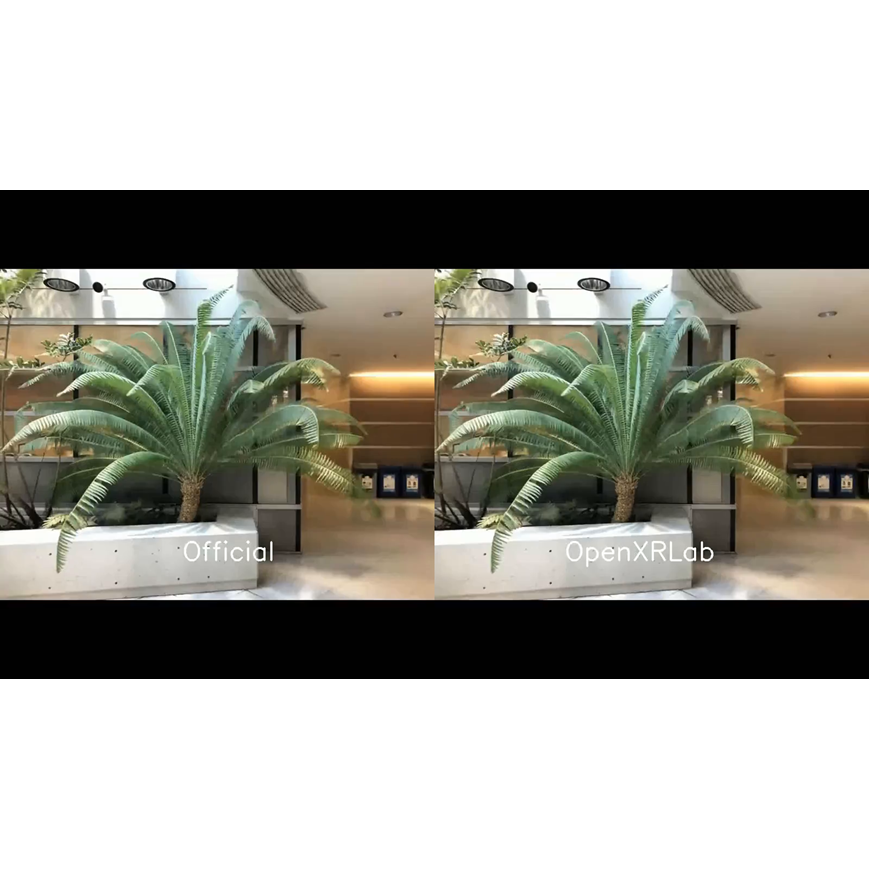

Zhengming Yu
CS Ph.D. student @ Texas A&M • Video Generation / Digital Human / 3D Vision
I am a third-year CS Ph.D. student in
Aggie Graphics Group of
Texas A&M University,
supervised by
Prof. Wenping Wang
and
Prof. Xin Li.
I received my bachelor degree from
South China University of Technology (SCUT).
My research interests include Video Generation, Digital Human, and 3D Vision & Graphics.
I spent several wonderful summers interning in industry. In summer 2024, I was a research intern at NVIDIA, working with
Tianye Li,
Koki Nagano,
and
Shalini De Mello.
In summer 2025, I was a research intern at Eyeline Labs (powered by Netflix), working with
Li Ma,
Mingming He,
and
Paul Debevec.
I am always open to discussing with different people. Feel free to drop me an email if you are interested! :)
Selected Research & Projects [ Full List ]



OpenXRNeRF
Open Source Project • 2022Main contributor.
XRNeRF is an open-source PyTorch-based codebase for Neural Radiance Field (NeRF).

Internship
Research Intern
May 2025 – Aug 2025 • Los Angeles, USEyeline Labs (powered by Netflix).
Working on video generation model for movie production.
Mentor: Li Ma, Mingming He, Paul Debevec
Research Intern
May 2024 – Aug 2024 • Santa Clara, USNVIDIA Research, AMRI Group.
Mentor: Tianye Li, Koki Nagano, Shalini De Mello
Research Intern
Feb 2023 – May 2023 • Hangzhou, ChinaImage Derivative Inc.
Mentor: Boyi Jiang, Yudong Guo

Research Intern
Jul 2021 – Nov 2022 • Beijing, ChinaSenseTime Research, XR Lab.
Mentor: Kwan-Yee Lin, Wayne Wu
Selected Honors & Awards
-
Alibaba TianChi Competition Top 1.2%. 2021
-
National Scholarship. 2020
-
National Scholarship. 2019
Professional Services
- Conference Reviewer: CVPR, ICCV, SIGGRAPH Asia, NeurIPS, ACM MM.
- Journal Reviewer: TVCG, TIP, TCVST.
Teaching Experience
-
CSCE 482:934 Capstone Design. Fall 2025
-
CSCE 656:600 Computers and New Media. Spring 2025
-
CSCE 634:600 Intelligent User Interface. Fall 2024
-
CSCE 656:600 Computers and New Media. Spring 2024
-
VIST 375:500, Foundation of Visualization. Fall 2023
Misc
- 🏀 Basketball. I love basketball, though the team I am in always won a second place :)
- 🧗 Rock Climbing. V2 player now and still improving.
- 🏎 Karting Racing. Always step on the accelerator, no brake when cornering.